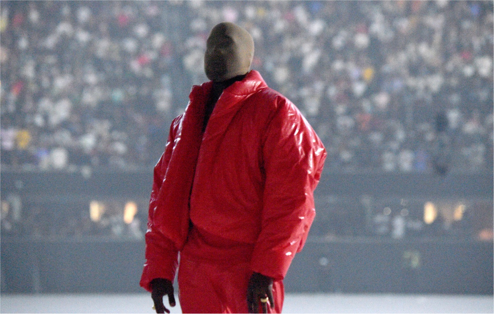
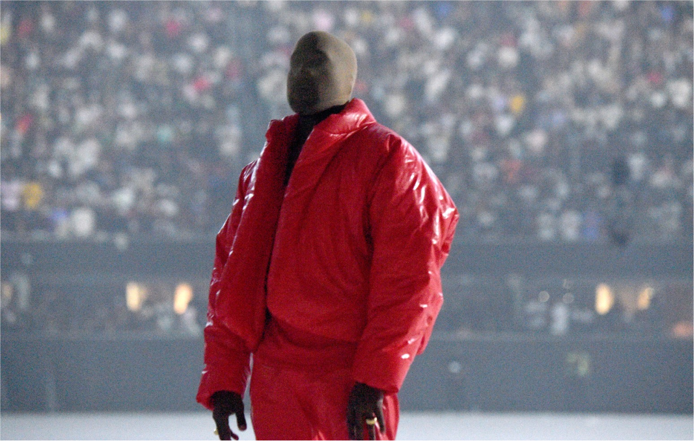

Стайлгайд
О бренде
Концепция
Уникальный медиа-сервис о моде в музыке. Бренд стремится подчеркнуть важную роль визуальной составляющей в музыкальной индустрии, акцентируя внимание на индивидуальности артистов, а также сблизить слушателей с их любимыми исполнителями.
Ценности
Внимание к разнообразию творчества музыкантов и признание их как межпредметных артистов
Ценность визуальной культуры как неотъемлемой составляющей музыкальной
Уважение интереса пользователей к личности исполнителей
Достоверность информации
Миссия
Показать ценность визуального в музыке и сделать исполнителей и слушателей ближе друг к другу
Айдентика
Метафорой айдентики является звучание образов и стиля одежды музыкальных исполнителей. Ведущий мотив — взаимодействие графики эквалайзера и фотографий, музыкального и визуального. Главным элементом композиции являются фотографии, поэтому графика и типографика имеют четкую и лаконичную структуру и располагаются по простой сетке, основанной на сетке эквалайзера.
Логотип
Значение
Болдовое начертание и строгая геометрия

Надёжность бренда, влиятельность и масштабность музыкальной индустрии
Вертикальные линии в начале
Символ звука и движения, динамичность и прогрессивность бренда, связь с музыкой
Построение и механика
Ширина линий в начале логотипа увеличивается, а расстояние между ними уменьшается. Расстояние между буквами одинаковое, наклоны элементов букв совпадают.

Охранное поле
Использование
Используется во всех носителях. Всегда занимает 1 колонку. Может выполнять роль графики и занимать 4 колонки в мелких печатных и веб—носителях.
Знак
Используется отдельно от текстового блока, если носитель не вмещает логотип, и в мерче. Допускается масштабирование знака по высоте одной строки.

Неправильное использвание

Искажение пропорций
Вращение
Использование в качестве
контейнера для фото
Добавление дополнительной графики
Цвета
Выбор цветов
Цветовая палитра вдохновлена яркими и контрастными цветами эквалайзера.


Цветовые пары


Недопустимые сочетания цветов


Типографика
Шрифт
Мягкий округлый гротеск с открытой аппертурой используется для контраста с геометричной и резкой графикой.
PP Pangram Sans
Tracking: 117%
Аа Бб Вв Гг Дд Ее Ее Жж Зз Ии Ии Кк Лл Мм Нн Оо Пп Рр Сс Тт Уу Фф Хх Цц Чч Шш Шш Ьь Ьь Ьь Ээ Юю Яя
PP Pangram Sans
SemiBold
Tracking: 117%
Аа Бб Вв Гг Дд Ее Ее Жж Зз Ии Ии Кк Лл Мм Нн Оо Пп Рр Сс Тт Уу Фф Хх Цц Чч Шш Шш Ьь Ьь Ьь Ээ Юю Яя
Размер
Заголовок
4x
Подзаголовок
2x
Основной текст
x
Сетка
Построение сетки
4×4
margin = gutter = 0.025 width
Выбор простой сетки связан с применением композиционных схем, в которых главную роль играют фотографии и должны соблюдаться условия, при которых типографика и графика не пересекаются.
Текстовые блоки выстраиваются согласно сетке. Допускается нарушение сетки строк при перемещении текстовых блоков, связанных с заголовоком по смыслу. Тогда расстояние между текстовыми блоками определяется высотой строчной буквы заголовка × 2.

Композиционные
схемы
Квадратный формат
Допускается масштабирование знака
по высоте одной строки.


Вертикальный формат
Поле для фото или графики
занимают 2–3 строки сверху.
Типографическое поле
занимает 1–2 строки снизу

Горизонтальный формат
Поле для фото или графики
занимают 2–3 колонки справа.
Типографическое поле
занимает 1–2 колонки слева.
Поле для графики может
занимать 3 строки сверху,
а типографическое 1 снизу.

Фотографии
Композиция и сюжеты
Фотографии на носителях изображают музыкантов и демонстрируют их одежду. На каждом фото должен быть изображен только один артист. Это обусловлено концепцией бренда: внимание в индивидуальности каждого музыканта.
Цвета и контрастность
В одежде артиста на фото должен значительно преобладать один цвет. Предпочтение отдается яркому образу музыканта в открытом цвете, но допускается выбор пастельных и менее насыщенных нарядов.
Задний план фотографии должен быть ненасыщенный, с небольшим количеством деталей. Предпочтение отдается фотографиям с фоном, близким к ахроматичному, но допускается выбор фотографий с фоном в пастельных цветах.
Примеры фотографий

 



Графика
Смысл
Ведущим образом проекта является эквалайзер — символ музыки и звука. Наложение эквалайзера на фото — метафора «музыка звучит там, где появляется образ артиста», передающая ценность визуальной состовляющей музыки.
Механика построения
Единицей эквалайзера является прямоугольник со следующими соотношениями сторон:
1. Постройте сетку из одного вида прямоугольников, ориентированных вертикально или горизонтально.
Сетка заполняет все графическое поле формата. Если по одно стороне формата сетка прямоугольников выходит за края формата, выровняйте ее по центру.
gutter = 0.2 ширины прямоугольника
2. Выберите один из цветов бренда и, закрашивая прямоугольники, изобразите наклоненную или изгибающуюся линию.
3. Эквалайзер всегда изображается на фоне цвета dark flow. Сделайте плавный переход от яркой линии к цвету фона с помощью переходных цветов.
4. Повторите шаг 2–3, если необходимо. Затем удалите или затонируйте оставшиеся прямоугольники в цвет фона.
При использовании графики на носителе, заголовок может тонироваться в цвет эквалайзера. Цвет логотипа или знака соответствует цвету заголовка.

Графика на фотографии
1. Повторите шаг 1 предыдущего пункта
2. Закрасьте прямоугольники, которые попадают в на одежду исполнителя в акцентный цвет фото. Затем сделайте плавную растяжку, закрашивая прямоуольники в тот же цвет, но с прозрачностью 70%, 50% и 25%.
3. Удалите неиспользованные прямоугольники. Затем сгруппируйте прямоугольники и выберите наложение для группы Hard light или Screen.

4. Отрегулируйте оттенок цвета эквалайзера и прозрачность группы. Для фотографий, гда на артисте не яркая одежда, подберите более яркий цвет эквалайзера, подходящий под тон фото.
Tone of voice
Наш бренд создан как для простых слушателей и фанатов, так и для специалистов в области моды и стиля, поэтому нам важно быть полезными и понятными для разной аудитории.
Мы стремимся заинтересовать приходящих за вдохновением и погрузить их в мир визуальных образов исполнителей, используем простой и современный язык, побудительные глаголы (узнай, посмотри, почувствуй), которые сближают с артистами.
Используем вопросительные заголовки, обращаясь к профессиональной части аудитории, чтобы подчеркнуть содержательность контента.